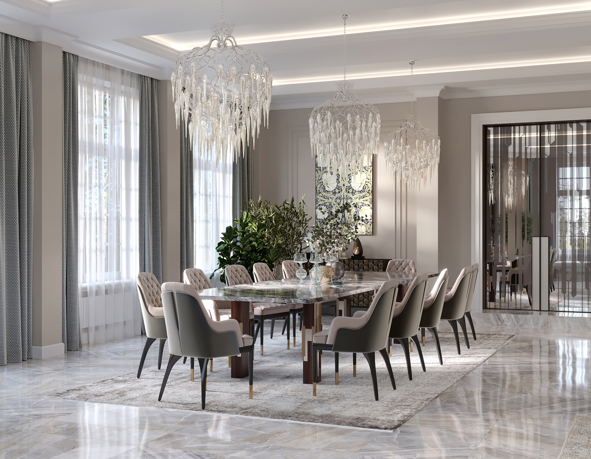
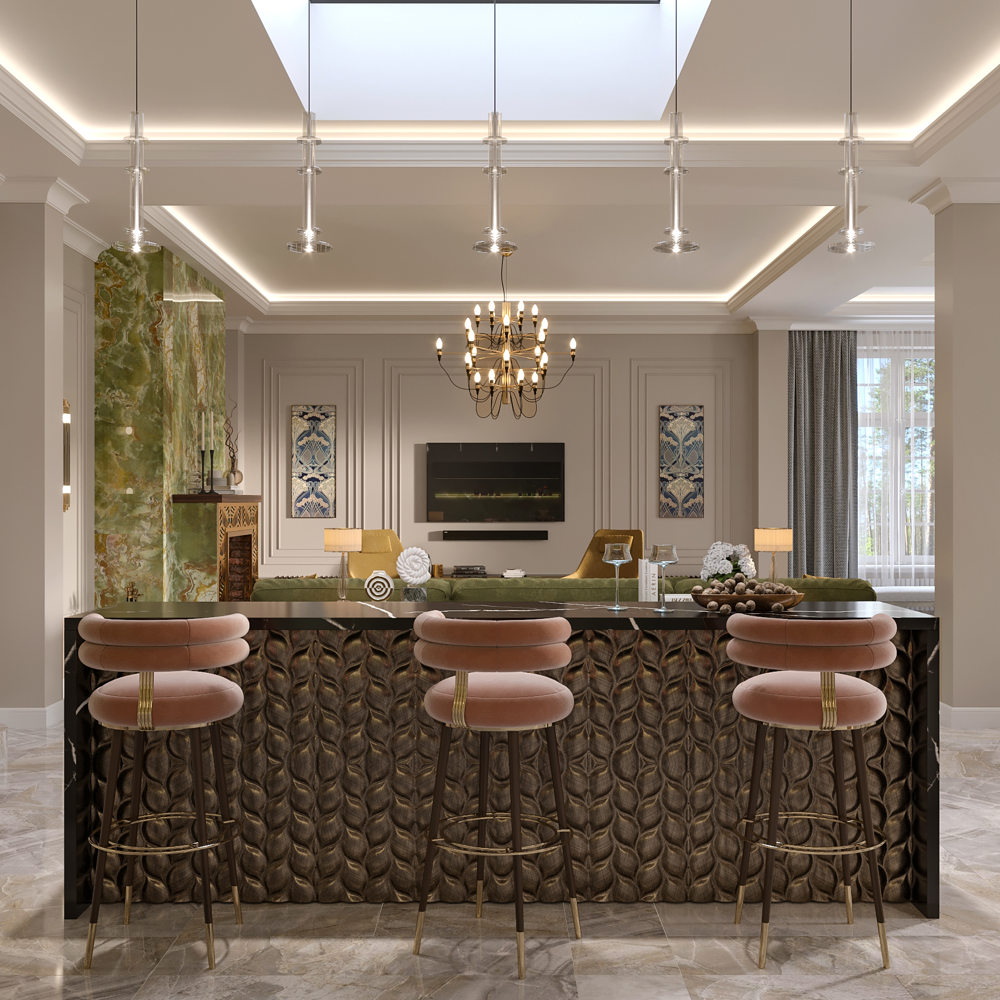
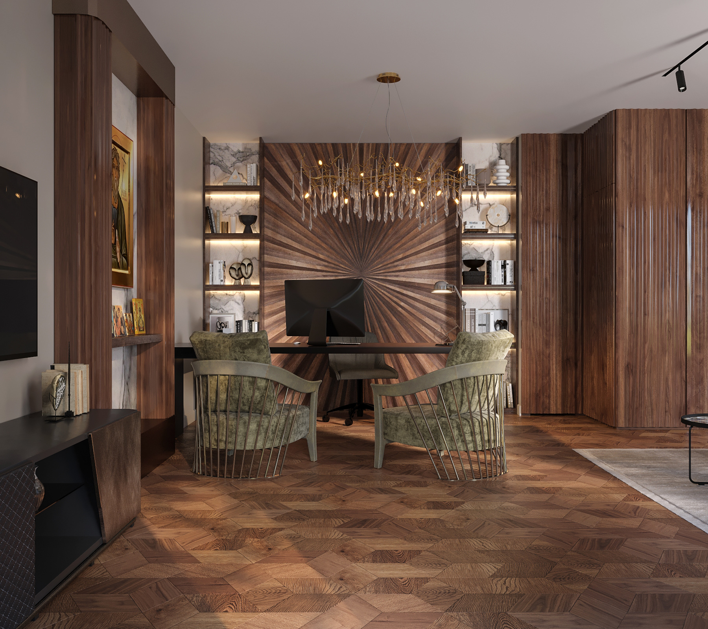
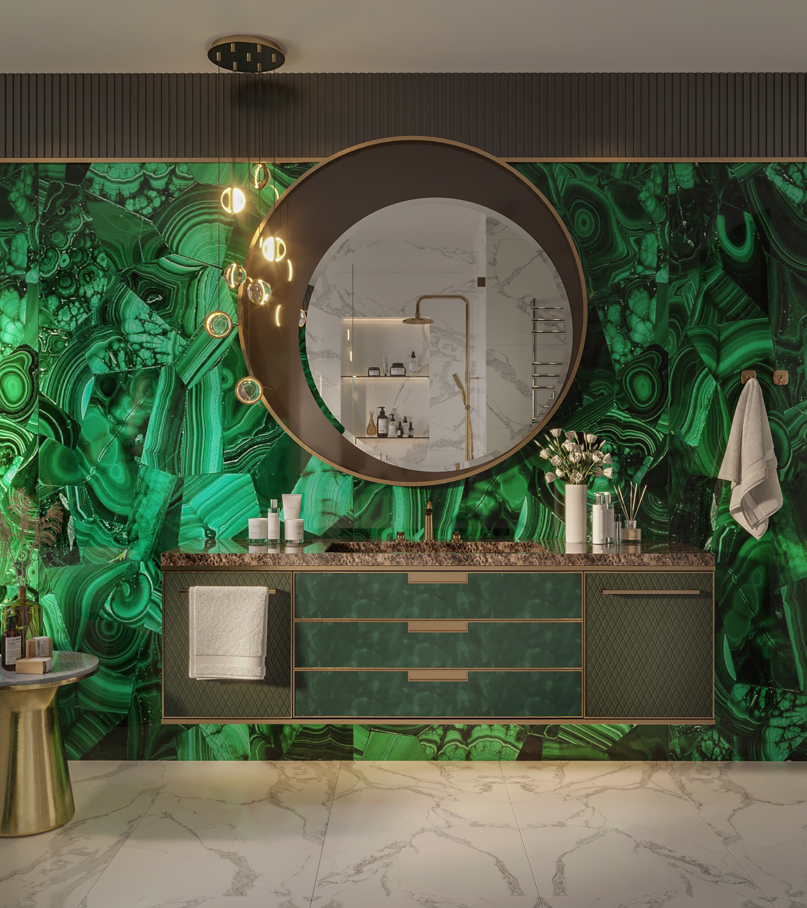
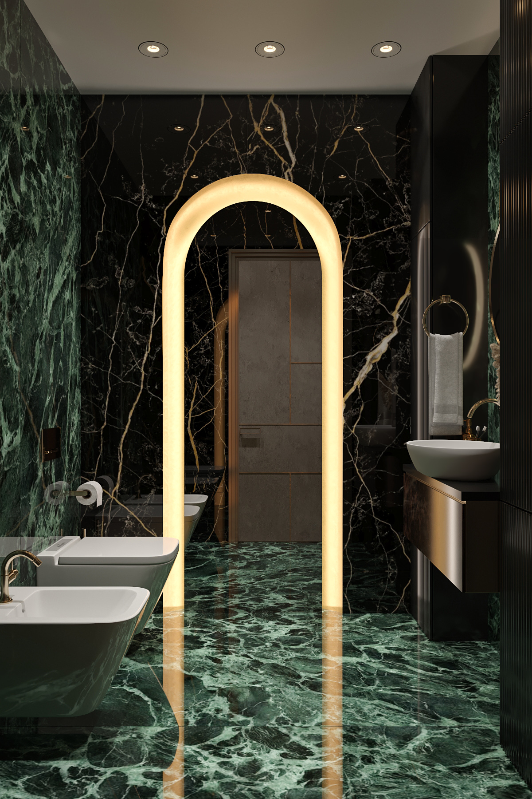
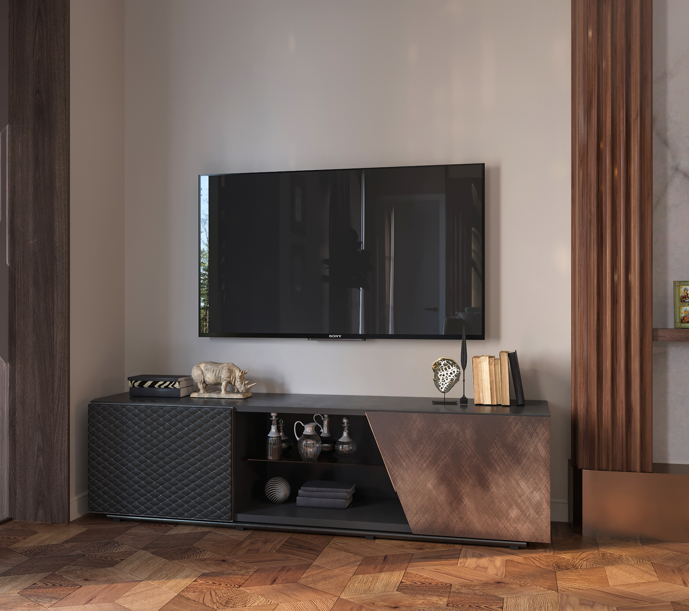

05
Особняк Артдеко
Москва: парадные залы и приватные зоны в языке арт-деко — мрамор, хрусталь и мягкий золотой акцент.
Частный интерьер
Столовая, кабинет и ванные комнаты — единый жест роскоши без театральности.
- Тип — частный особняк, Москва
- Материалы — мрамор, дерево, хрусталь, текстиль
Фокус — свет, ритм панелей, сценарий жизни
Кадры проекта
Статичные виды пространства после прохода





